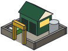

Rebuilding the map…
Day-by-day summary
Nodes
Localities
Zones
Collection log (newest first)
Photo: Matterhorn and the Milky Way, Deralpinbergsteiger, CC BY-SA 4.0
Buildings

Depot Homes Shops and offices Factories Hazardous site Disposal site (routes end here)
Road types
Arterial
Industrial
Commercial
Residential
Area types
Residential
Commercial
Industrial
Routes
Truck route
Hazard route
Photo: Oeschinensee, Deralpinbergsteiger, CC BY-SA 4.0
Photo: Matterhorn and the Milky Way, Deralpinbergsteiger, CC BY-SA 4.0